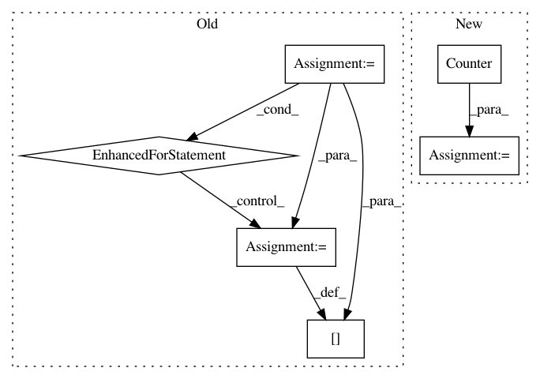

a1a430fa42fa58cb3ba9d93f44749319928b78c8,dirty_cat/string_distances.py,,ngram_similarity,#Any#Any#Any#,90
Before Change
ngrams1 = get_ngrams(string1, n)
count_dict1 = {}
for ngram in ngrams1:
count_dict1.setdefault(ngram, 0)
count_dict1[ngram] += 1
ngrams2 = get_ngrams(string2, n)
samegrams = 0
for ngram in ngrams2:
try:
After Change
n-gram similarity between two strings
ngrams1 = get_ngrams(string1, n)
count1 = Counter(ngrams1)
ngrams2 = get_ngrams(string2, n)
count2 = Counter(ngrams2)
samegrams = sum((count1 & count2).values())
allgrams = len(ngrams1) + len(ngrams2)
similarity = samegrams/(allgrams - samegrams)
return similarity
In pattern: SUPERPATTERN
Frequency: 3
Non-data size: 6
Instances
Project Name: dirty-cat/dirty_cat
Commit Name: a1a430fa42fa58cb3ba9d93f44749319928b78c8
Time: 2018-03-14
Author: patricio.cerda@inria.fr
File Name: dirty_cat/string_distances.py
Class Name:
Method Name: ngram_similarity
Project Name: OpenNMT/OpenNMT-py
Commit Name: d556116728d4f505eb14be081f29e32212145725
Time: 2017-09-01
Author: bpeters@coli.uni-saarland.de
File Name: onmt/IO.py
Class Name:
Method Name: merge_vocabs
Project Name: reinforceio/tensorforce
Commit Name: 9000ad931722064fb2efe38649389a5154538ce4
Time: 2019-02-13
Author: alexkuhnle@t-online.de
File Name: tensorforce/core/networks/auto.py
Class Name: AutoNetwork
Method Name: internals_spec